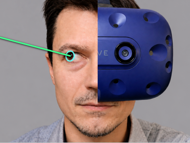

Eye Tracking with a VR Headset
This tutorial page will collect resources for setting up eye tracking with a VR headset, including calibration notes, gaze visualization, and examples for gaze-based interaction in immersive environments.

This tutorial page will collect resources for setting up eye tracking with a VR headset, including calibration notes, gaze visualization, and examples for gaze-based interaction in immersive environments.
